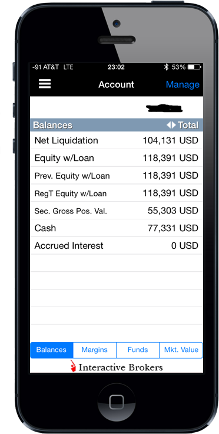

IMAGINE IF YOU COULD BUILD A PASSIVE INCOME PORTFOLIO THAT PAYS YOU WHILE YOU SLEEP AND LETS YOU LIVE THE LIFESTYLE YOU'VE ALWAYS WANTED.
What if you could live a happier, freer, and richer life without having to worry about where your next paycheck is coming from, imagine if you had enough money to pay for all your bills, imagine if you could retire earlier?
Introducing the Arbitrageur Investing System: An Advanced Strategy System for Income Investing, Doubling Your Money, and Building a Crash-Proof Investment Portfolio that is Capable of Paying for the Lifestyle of Your Dreams.
The Arbitrageur Investing System is the first and only proven STEP-BY-STEP interactive system that teaches you how to make your money work for you.
Finally, an all-in-one investing strategy course that really works,
- Even if... you have never invested before
- Even if... you have little or no capital to start with
- Even if... you are close to retirement, and
YES, even if you feel overwhelmed because you have failed to profit from the markets before.
Sound hard to believe?... Keep reading and you'll see for yourself...
Hi, I'm Irving Rivera,
author of the Arbitrageur Investing System.
I am an engineer by training and president and founder of IRP Investment Corporation, and in the past three years, I have backtested, implemented, and proven the success of the investment strategy I am about to share with you.
I've figured out exactly how to profit from Wall Street's biggest secret. The industry has referred to this tactic by many names, such as net interest margin or interest rate arbitrage. However, I have streamlined this strategy in four comprehensive but digestible training modules that I called the Arbitrageur Investing System.
BREAK FREE FROM THE SHACKLES OF YOUR JOB, THAT NINE-TO-FIVE UNSCALABLE INCOME, AND THAT POOR INVESTING PERFORMANCE
What is this course all about? Why is it so special?
What is the secret behind this course?
This program is NOT about a quick money making scheme or gimmick, it is not about earning millions overnight, and it is not a weird scam. This program is about the insights of professional investing...
about the trading strategies big institutions and pros such as Warren Buffett use every day to profit from the markets.
THE BLUNT TRUTH: EVERYBODY TALKS ABOUT COMPOUND INTEREST, BUT NO ONE KNOWS HOW TO HARNESS IT!
"I am not talking about being rich; I am talking about building real wealth."
Michael Jordan is rich, but the owner of the Chicago Bulls, the one who wrote his paychecks, is wealthy! (just like Steve Ballmer, new owner of the LA Clippers)
ASK YOURSELF THIS: What would you be doing if money were not an issue? Would you show up for work tomorrow, or would you travel around the world?
THIS ISN'T JUST A PIPE DREAM. YOU CAN ALSO HAVE A SUCCESSFUL PASSIVE INCOME PORTFOLIO THAT WORKS FOR YOU, SO YOU DON'T HAVE TO . . .
SO YOU CAN BE FREE TO ENJOY THE FINEST EXPERIENCES THE WORLD HAS TO OFFER
- You cannot wait until the weekend, because you hate your job.
- You are craving to go on vacation, because you are stressed out.
- You wish you could just take off and travel the world.
- You wish you had enough money invested so you could just quit your job and do what you truly love.
These sound familiar to me too, and I can seriously relate to your feelings of unfulfillment, which is why I decided to focus my academic studies in the realm of financial engineering by taking courses such as the following:
ACCOUNTING FOR ENGINEERS
Basic accounting concepts and systems; uses and limitations of accounting data in the solution of managerial and financial problems; interpretation and use of accounting information for decision making.
ECONOMIC AND COST ANALYSIS FOR ENGINEERS I & II
Fundamental analysis and techniques of accounting. Economic analysis and cost control for decision making in engineering projects. Basic concepts of an accounting system; use of the information; time value of money; discounted cash-flow analysis considering present worth, equivalent annual cost, and rate of return. Introduction to cost flow and control in a manufacturing environment.Techniques to analyze alternatives and costs estimates in engineering projects and manufacturing organizations. These include cost-benefit analysis; replacement analysis; inflation; activity-based costing; production costs variance; and standard costing.
ENGINEERING ECONOMIC ANALYSIS
Criteria and techniques of economic analysis as related to decision making in engineering projects where time and money are the primary trade-offs. Discounted cash flows; comparison of alternatives using equivalent annual cost, present worth, or rate of return; break-even analysis, depreciation, tax effects, replacement, sensitivity, and risk analysis.
ADVANCED ECONOMICS FOR ENGINEERS
Economic evaluation of engineering and R&D projects is covered from the engineering management viewpoint. The time value of money, tax considerations, break-even analysis, sensitivity analysis, project evaluations under uncertainty, risk sharing, capital budgeting, financial ratios, and cost estimating techniques are studied.
So that I could master the intricacies of personal finance, and YES I did.
I decided to study all this because I wanted to figure out how legendary investors such as Ray Dalio achieved all their wealth. And the good news is that after four years of studying and three years of real practical experience investing in the market, I did. Please allow me to share with you what I found so that you don't have to expend all the time and money I did deciphering the complex economic equations that rule today's world.
SEEM DAUNTING? NO NEED TO WORRY ABOUT THESE FORMULAS-I'VE GOT YOU COVERED.
However, sometimes it is not just about the numbers; it is also about the psychology of investing.
"INVISIBLE SCRIPTS" ABOUT INVESTING IN THE MARKETS
Ramit Sethi, the author of I Will Teach You to Be Rich, coined the term "invisible scripts" for beliefs that are so deeply held in our mind that they're actually invisible to us.
When it comes to investing, there are seven damaging beliefs that hold us back from taking action. As you read, take a hard look to see which of these apply to you.
#1."I don't have enough money."
I DON'T HAVE ENOUGH MONEY. Most people think that they need multiple thousands of dollars to start investing. Others think that the capital they have to invest is too little to make a difference. Then they decide to invest in penny stocks because they think that it will make a difference. Did you know that professionals and institutions alike have the rule of not investing in penny stocks (5 dollars or less)? Don't you think there is a good reason why they are priced so low?
Inside the Arbitrageur Investing System, I address this concern by sharing with you seven different ways of raising investing capital.
#2."I don't know/understand how to invest or how to get started."
I DON'T KNOW/UNDERSTAND HOW TO INVEST OR HOW TO GET STARTED. Do you sometimes feel overwhelmed by the number of confusing investing terms, market fundamentals, and technicals? I bet you have bought multiple investing books but have not received any real results. The thing is that the current books in the market offer you only vague definitions of terms such as PE, Market Capitalization, and PEG ratios. However, the most frustrating thing about this is that never once inside these books do they mention or share with you real strategies and tactics about investing. Worse than that, they do not even share with you the names of the stocks they own or how well they perform.
Inside the Arbitrageur Investing System, I not only explain the key fundamentals you need to know about investing, but I also share with you my own personal holdings and performance record, all wrapped inside a portfolio analytics program so that you can apply them to your own numbers .
#3."I don't want to lose my money."
I DON'T WANT TO LOSE MY MONEY. The fact of the matter is that if you are not investing right now, you are already losing money. You are losing the opportunity to become financially independent. Meanwhile, inflation is eating away at the value of your money. People think that investing is like gambling: they will get lucky or they will lose it all. Nothing could be further from the truth-no asset class, including gold and real estate, has ever beaten the market performance over extended periods of time.
Inside the Arbitrageur Investing System, I will show you the right way to invest, which is investing for income and not for speculation.
#4."Now is not the right time to invest. The market is too high. . . too low."
NOW IS NOT THE RIGHT TIME TO INVEST. THE MARKET IS TOO HIGH . . . TOO LOW. If this statement were true, we would never invest because if there is one thing that is guaranteed in this market, it is that there will always be volatility. You will NEVER hear a pro say, "buy low and sell high" or "let's dollar cost average this trade." The game they play around you behind closed doors is
"buy high and sell higher" and "cut your losers and ride your winners."
Inside the Arbitrageur Investing System, I will teach you a number-based system with strict rules of when to buy and when to sell. Because the worst thing you can do is to try to time the market; you will never win that way.
#5."The market is rigged."
THE MARKET IS RIGGED. This is one of my personal favorites because, apparently, this happens to be common knowledge. Even Michael Lewis wrote about it. The thing is that somebody needs to tell David Einhorn, David Tepper, and Leon Cooperman about this because, for some reason, they have never stopped making money hand over fist.
Wait , I know what is going on: they are investors, not traders. If you are day trading and trying to compete with high frequency machines, you are going to lose. However, if you invest like a pro, the market is your oyster.
Inside the Arbitrageur Investing System, I will show you step-by-step how to execute exactly the same trade Warren Buffett pulled on Bank of America, the one about the preferred shares, the same one that generated him over $300 million a year.
#6."I just want to set and forget it."
I JUST WANT TO SET AND FORGET IT. This wrong because your money is your responsibility. If you do not take the time to make plans for your money, trust me, somebody else will. And not even the most automatic systems are completely hands off; you will always need to pay maintenance and monthly fees and recalculate your risk profile and asset allocation, not to mention the constant rebalancing. Remember that free and cheap is always more expensive than paid, and the effort you put in is always proportional to the results you will get out.
Inside the Arbitrageur Investing System, I have made the complete platform brief and easy to implement and understand. I guide you all the way and straight to the point for an effortless execution.
#7."I just need my money to do what it is supposed to."
I JUST NEED MY MONEY TO DO WHAT IT IS SUPPOSED TO. Yeah, now it will. Money is not supposed to get lost or be lazy; it is supposed to work for you. You should only be concerned with receiving that dividend check every month, so you can pay for your living expenses and live a rich life. No more worrying about work schedules or alarm clocks. Now you will finally make your money work for you, earning you interest while you sleep.
Inside the Arbitrageur Investing System, you will learn how to harness the truth about the power of compound interest by learning the fundamental difference between savings capitalization and lending amortization. "Wall Street's most heavily guarded secret."
How Many of These Scripts Do You Have?
What's your natural response to them?
Do you know what I hate the most about these beliefs? The fact that these so-called gurus perpetuate these scripts with stupid and useless tips, such as the following:
- You have to save more
- You have to spend less
- You need to stop eating out
- You have to stop drinking lattes . . . please, give me a break
Really is that all they've got? Is the sun yellow and the sky blue?
WHAT IS THE POINT OF WORKING HARD IF WE CANNOT LIVE A RICH LIFE AND ENJOY OURSELVES?
Dear Investor, please rest assured because I've got your cover!
Presenting the Arbitrageur Investing System
A tested and proven strategy SYSTEM explained in four modules and seventeen sections, with STEP-BY-STEP interactive guides that will forever free you to do what you really love by producing passive income from interest, dividends, royalties and distributions.
You will receive these lessons (in a beautifully designed frontend ), with a fully customizable document format and worksheets already program (in a seamless yet powerful backend), so you do not have to worry about the complexity of the calculations-BECAUSE THEY JUST WORK!
The Four Core Modules of the Arbitrageur Investing System are Designed to Cover the Entire Process of Investing in the Markets from A to Z.
You will learn exact strategies, frameworks, and tactics, from the first step of raising investing capital all the way to the final step of collecting those passive income checks that will forever free you to pursue the lifestyle of your dreams.
What Results Will the Arbitrageur Investing System Deliver?
As I mentioned before, I am going to share with you the tactics that I implemented myself with proven results.
The following are the tangible results and deliverables you will receive:
- The Seven Capital-Raising Tactics
- The Decision-Making Process of Incorporation
- The Doubling Your Money in a Single Bank Transaction Process (aka net interest margin trade, commercial interest arbitrage)-"Wall Street's most powerful investing strategy system"
- The 7.75 Percent Annualized Return Process (a behind-the-scenes look at Warren Buffett's Bank of America and Goldman Sachs preferred shares trade)
Well, let me prove to you once and for all that this system works. . . take a look inside my actual trading accounts.
The Results of My Commercial Interest Arbitrage

After just three years of computing interests for $100,000 of initial capital.
My Historic Performance Table
| Period | Arbitrage Portfolio | Yield | SPY Total Return | Yield |
|---|---|---|---|---|
| 2011 | 14.06% | 7.83% | 6.93% | 2.06% |
| 2012 | 37.99% | 1.21% | 12.52% | 2.13% |
| 2013 | 3.36% | 2.17% | 26.14% | 1.88% |
| ON-AVG | 18.47% | 3.74% | 15.20% | 2.02% |
Average returns of 18.47%, beating the market by 3.27 %.
My Trading Account Balance
This current fiscal year net liquidation balance inside my brokerage account.
I show you this not to impress you, but to impress upon you the importance of making educated investing decisions because . . .
"people should not talk about investing if they are not willing to show you their actual results."
Inside the Arbitrageur Investing System

- The seven ways of raising investment capital
- Foreword about how the system came to be
- Risk descriptions and investing classifications
- The difference between building wealth and being rich
- Reading guidelines and explanations for better understanding

- How to create your own corporation
- Which corporate structure to choose from
- The tax efficient way of investing via a separate legal entity
- The importance of protecting the corporate veil
- The difference between the Limited Liability Company and the C & S type Corporations

- How to take a commercial loan
- How to create a commercial certificate of deposit
- How to double your money in one unique transaction
- What really is commercial arbitrage "net interest margin investing"
- Demonstrates how banks actually make money, and how you can do it as well
- Includes interactive and highly customizable spreadsheet with a investing profit calculator
- Reveals Wall Street's biggest secret: the difference between computing and amortizing interest rates
- Shows you step-by step how to execute the same trade Warren Buffett did to Bank of America, and Goldman Sachs.

- The Rule of 72
- How to make your money work for you
- The rules of trading: when to buy and when to sell
- Includes a highly customable dividend coverage calculator
- Includes a list of ten personal favorite investing instruments and resources
- Shows you correct asset allocation (ETFs, CEFs, Single Equities, and Bonds)
- Explains social lending best practices, also called peer-to-peer lending (P2P)
- Includes the Arbitrageur's proprietary equation that tests equity statistics to predict their future performance
- Teaches you how to trade like a professional by using the "our golden rules" of margin brokerage accounts
- Tells you what Jesse Lauriston, "famous stock operator," thought about the Dow, S&P500, and dollar cost averaging
- Shows you the importance of investing for income (interests, dividends, royalties and distributions), without speculation
- Teaches you what it really means to be diversified, "internal vs. external diversification," shows you the right allocation guidelines
- Arbitrage investing fundamentals and technical analysis; explains you the technical aspects of moving averages and market volumes, plus the fundamental importance of free cash flow and net asset value
THE EXTRAS AND BONUSES
The most comprehensive and customizable tool of its kind, the full roadmap of arbitrage investing is explained in a complete A-Z case study that guides you from the first step of the Arbitrageur Investing System all the way to the last one. Includes interactive charts and spreadsheets that will do all the hard math calculations for you.
A full walk-through of the system is included. Finally, in the rare chance you get stuck on any of the steps or you need help of any kind, I offer you my full support. Just send me an e-mail, and I will allay any concerns you may have...
my special gift to all action takers who hate meritocracy
SO, WHAT ARE YOUR OPTIONS?
- You can try to figure it out yourself, get a degree in financial engineering, or dabble in the markets by yourself, but who knows how much that is going to cost you.
- You can keep running the rat race and use all of those useless free tips about maxing your 401K and IRA.
- You can trust your money to other people, "financial advisors," and keep paying them crazy fees $600 or more.
Alternatively, you can invest in the Arbitrageur System for only one payment of $13. In which, I will bear all the risk of the transaction with an unbeatable 60-day, 100% money-back guarantee.
Tell me, who has ever offered you 100% of your money back after investing with them?
Arbitrageur Investing System $13
If you have any questions or concerns about the course for system, email me.We're happy to help.
service@arbitrageportfolio.comHow does the Arbitrageur compare with other solutions on the market?
1) It is not just another book; it is a customizable platform that includes a dashboard where you can simulate your average returns through our portfolio analytics program.
2) It includes proven and tested results, not just theories or quick and cheap tricks.
3) It is not just another piece of plain text paper talking at you; it is iterative and customizable.
4) It offers direct e-mail support
Now, how will your actual portfolio look like after you execute the step-by-step tactics outlined inside the Arbitrageur System?
RUN the numbers and SEE how much you could be earning: Investing Profit CalculatorThe best part about this profit calculator is that inside the Arbitrage System, you will find a personalized spreadsheet for this calculation that allows you to enter any and every value you can imagine, all the way down to the cents and micro-decimal percentage points, including monthly terms calculations of compounding interest-all with 100% accuracy.
Click Here to OrderExpress Profit Calculator
| Initial Investment Capital Amounts $ | $ 50,000.00 | Input |
|---|---|---|
| Doubling Result | $ 100,000.00 | Output |
| Target Return % | 7.25 | Input |
| CD Savings Rate % | 3.25 | Input |
| Loan Interest Rate % | 6.50 | Input |
| Terms In Years | 15 | Input |
| FInal Portfolio Value | $155,573.08 | Output |
| ROI | 54% | |
| Gray data require inptut. | ||
The #1 QUESTION I always get about investing in the Arbitrageur System is . . .
Is the Arbitrageur Investing System right for me?
I appreciate and understand this question because if I were you, I would have the same concern. So, who are the perfect candidates for this style of investing?
THIS PROGRAM IS NOT FOR THE FOLLOWING:
- People who have declared bankruptcy or have a poor credit history.
- People with no ambition and no entrepreneurial spirit, what Seth Godin calls "lizard brain people."
- People who have high level of consumer debt. Because I target returns of 7.75%, if you are paying 20% out in credit cards, I cannot help you.
- People who are lazy and never take action and who are always trying to win the lottery or find a magic bullet to solve all their problems. "wantrepreneurs"
- People who have a real net worth, "true free cash flow," of OVER $500,000. I have this weird belief that you should never take advice from people who have less than you do. You should only listen to people who are in a better position than you are so that you can learn from them and move forward, not backwards.
THIS PROGRAM IS PERFECT FOR THE FOLLOWING PEOPLE:
- Investors with free investing capital are perfect for this program because this is the pillar of our system; it teaches you how to make your money work for you, by doubling it - while producing income for life.
- Entrepreneurs are perfect for this program because inside the program, I show them how to double their business capital in a single bank transaction with zero risk, by finally making their money work for them.
- People who are looking for an early retirement (or who are close to retirement) are perfect for this program because my strategy of investing for income frees them from market speculation, allowing them to reap the rewards of their life's work, by generating true passive income.
I know it's natural to have concerns. AND THIS ISN'T JUST SOMETHING "OTHER" PEOPLE DO. That's why I have added a 60-day, 100% money-back guarantee. If you try the system and don't love it, you can e-mail me back for a full refund. No Questions Ask.
Are you going to let another second pass by or are you taking Action today?
Are you going to keep settling for less?
Don't you know that the average twenty-five year old has only fifty summers left to enjoy his or her life? That is only fifty South by Southwests, Burning Mans, Coachellas, Halloweens, and New Year's parties... or 12 World Cups.
Invest in the Arbitrageur System and start creating the financial freedom you so deserve-start living, stop existing!
Click Here for Instant Access...